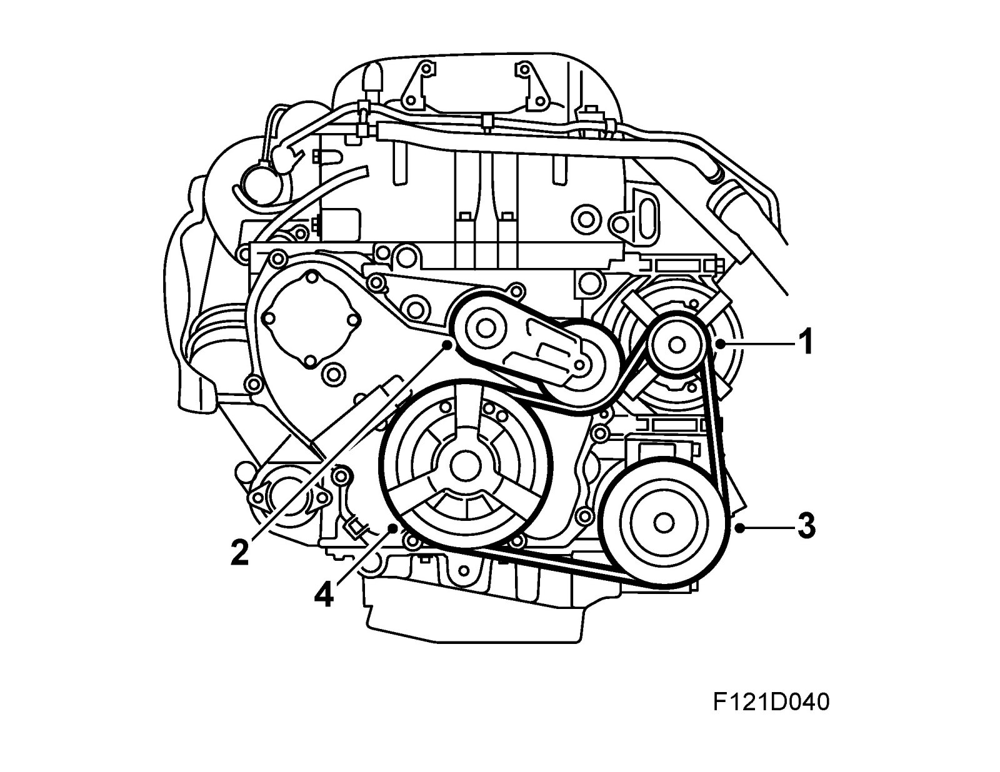

Drive Belts, Mounts, Brackets and Accessories: Description and Operation
Drive for auxiliaries
Belt circuit with and without A/C compressor
1. Generator
2. Belt tensioner
3. A/C compressor
4. Crankshaft pulley
The engine has a belt circuit that drives the A/C compressor and generator.
The belt circuit has an automatic and self-adjusting belt tensioner for simpler service and long life. The belt tensioner comprises a powerful spring that affects the belt tension via a pulley. The belt is multigroove type.